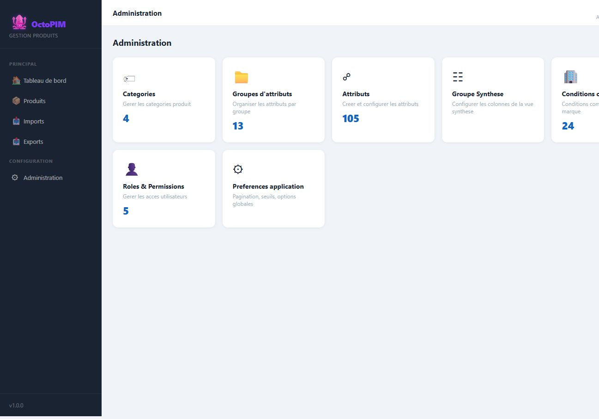

Administration
Hub de parametrage. C’est ce qui rend l’outil capable de remplacer Excel puis Akeneo : on ajoute des champs, des familles, des colonnes sans attendre un deploiement.
Qu’est-ce que l’administration ?
Un menu reserve aux profils habilites, avec une carte par module. Chaque carte n’apparait que si le role a au moins la lecture du module.

A quoi ça sert ?
- Faire evoluer le modele (attributs, groupes, categories).
- Configurer la liste de travail (vue synthese) et les seuils (completion, pagination).
- Gerer les barèmes (conditions commerciales) et les droits.
Modules
| Module | Page spec |
|---|---|
| Categories | Categories de produit |
| Groupes d’attributs | Groupes d’attributs |
| Attributs | Gestion des attributs |
| Vue synthese | Configuration de la vue de synthese |
| Conditions commerciales | Conditions commerciales |
| Roles & permissions | Roles et permissions |
| Alertes | Alertes |
| Preferences application | Pagination de la liste, seuil de completion. Distinct des preferences d’affichage utilisateur (theme). |
En detail
L’administration parametre le referentiel sans redeploiement. Le menu n’apparait que si au moins un module est lisible. Chaque carte ouvre un module : categories, groupes, attributs, conditions, roles, alertes, vue de synthese, preferences.
- Les preferences utilisateur (theme, affichage) ne sont pas les preferences d’application (pagination, seuil de completion).
- Pagination de la liste : 0 a 500, defaut 50. 0 desactive la pagination.
- Seuil de completion : 0 a 100, defaut 80. Il sert au dashboard (produits incomplets) et au filtre de la liste. La couleur des barres de completion suit les seuils parametres ici.
Regles
RG-ADM-01 — Le menu Administration n’apparait que si au moins un module est lisible.
RG-ADM-02 — Preferences utilisateur (theme, affichage) ≠ preferences application (seuils, pagination).
RG-ADM-03 — Pagination : 0 a 500 produits par page, defaut 50. 0 desactive la pagination. Le seuil de completion va de 0 a 100, defaut 80. Il sert au tableau de bord et au filtre des incomplets.
RG-ADM-02 — Preferences utilisateur (theme, affichage) ≠ preferences application (seuils, pagination).
RG-ADM-03 — Pagination : 0 a 500 produits par page, defaut 50. 0 desactive la pagination. Le seuil de completion va de 0 a 100, defaut 80. Il sert au tableau de bord et au filtre des incomplets.